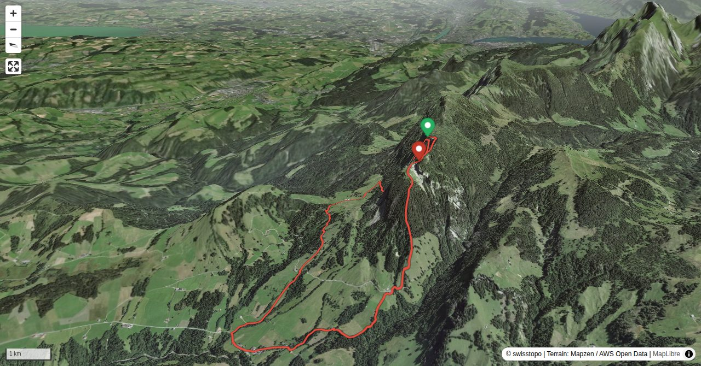

Risetestock and Blaue Tosse are often visited, but mainly on the marked trails. Here we present a more adventurous variant, a direct ascent from Gfellen to both summits.
Quick Facts
| Summit elevation | 1801 m |
|---|---|
| Difficulty | SAC T4 Alpine hiking with exposure, rougher terrain, and sections that are not suitable for beginners. Guide |
| Trailhead | Gfellen |
| Region | Pre-Alps |
| Canton | Luzern |
| Distance | 7.7 km (loop) |
| Total ascent | ~796 m |
| Elevation range | 1012-1800 m |
| Route sources | SAC Route Portal |
Photos


Planning
↓ Download GPX
i
Map tiles: © swisstopo
(CC BY 3.0) | © OpenStreetMap contributors |
Map library: Leaflet.
Route line is approximate — verify against the SAC Route Portal before going.
7.7 km total
↑ 796 m ascent
↓ 797 m descent
max 1800 m
steepest 269%
i
Trail difficulty per segment: OSM
Elevations computed from the inlined GPX track (SwissTopo height API).
sac_scale (precise T1–T6) with
swissTLM3D Wanderwegart
fallback where OSM is silent (coarser T2/T3 and T4+ buckets).
Coverage: OSM 76.2% · swisstopo 9.9% · unknown 12.7%.Elevations computed from the inlined GPX track (SwissTopo height API).
Loading forecast…
Start: Gfellen (1800 m)
Route returns to Gfellen.
3D Terrain View

Route Details
Traverse from Gfellen to Blaue Tosse
- Gfellen – Risetestock 2 h 15 min Risetestock – Blaue Tosse 15 min Blaue Tosse – Gfellen 1 h 30 min
Source: SAC Route Portal
Field Reference
| Trailhead | Gfellen | 46.96040, 8.15510 |
|---|---|---|
| Summit | Risetestock Pilatus (1801 m) | 46.95794, 8.15060 |
Coordinates are WGS84 decimal degrees (lat, lon). Emergency: 112 (general) or 1414 (Rega air rescue). Page URL: